Jetpack Compose official logo.
Last Updated: 2022-10-20
Throughout these past two years we've got our timelines flooded with posts about Jetpack Compose. It all started in February-March 2021 with the #AndroidDevChallenge and from then on we've kept seeing new developers joining this Composable new world!
"Jetpack Compose is Android's modern toolkit for building native UI. It simplifies and accelerates UI development on Android. Quickly bring your app to life with less code, powerful tools, and intuitive Kotlin APIs.", as mentioned on the official website.
Along with this, it's also worth mentioning that Android features are no longer chained to a specific API version. Starting in API 21, all developments are backward compatible. This means that if, for instance, you want to use the IME animation that was released in Android 11, you can use them back until lollipop. Yes! When Android was still named after popular desserts.
Although Jetpack Compose brings a lot of advantages, it's important to mention that it has an associated learning curve. If you've been developing for Android for quite some time and so you've been using imperative UI, making the change to declarative will take you a few weeks/months to master - this is normal.
You'll need to learn this new development paradigm along with an entire new API. We've all taken months, so don't worry if things might be a bit blurry in the beginning, learning something new takes time.
Fortunately, there are a lot of materials available that will help you along the way:
Before we jump into the Codelab, remember that Jetpack Compose is in version 1.3.0. If we compare it with XML it has just given its first steps, so you might find a couple of bugs along the way, or perhaps some API's don't support the full set of attributes/functionalities that you're used to. This is perfectly fine, for the first one you always have Google's issue tracker from where you can check if anyone found the same problem, for the second one, if there's no library that solves the problem you can always use XML on that Activity (they're interoperable), or better - you can give it support!
In this codelab, you're going to build the Unsplash app! It's a simple application that communicates with the Unsplash servers in order to download the most beautiful images out there.
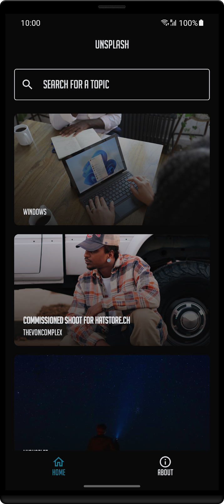
The latest versions of Android Studio already have a new template for Jetpack Compose. Although in this codelab you're going to start with an existing project that already communicates with the Unsplash servers in order to get the latest trending images. It's worth mentioning that you can easily create a new project via the New Project wizard on Android Studio.
To do this, open Android Studio and click in New Project.
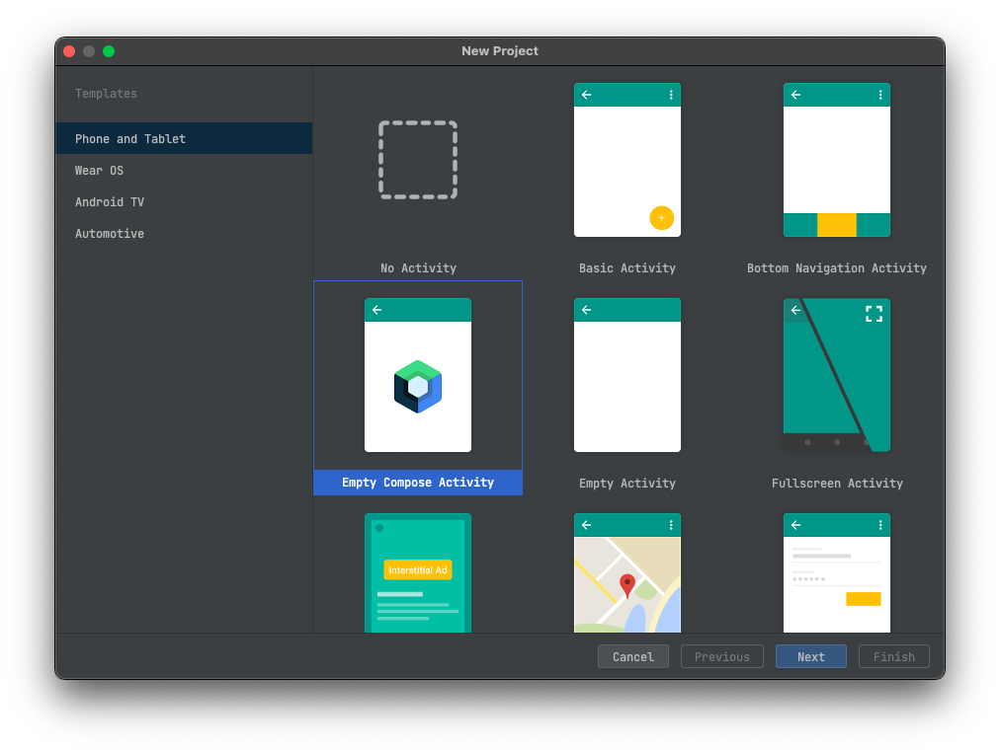
You'll be prompted with a similar screen where you find a grid with several templates. Select the Empty Compose Activity.
In order to create your new project, you'll need to enter its name, package, etc. - similar to what you're already familiar with.
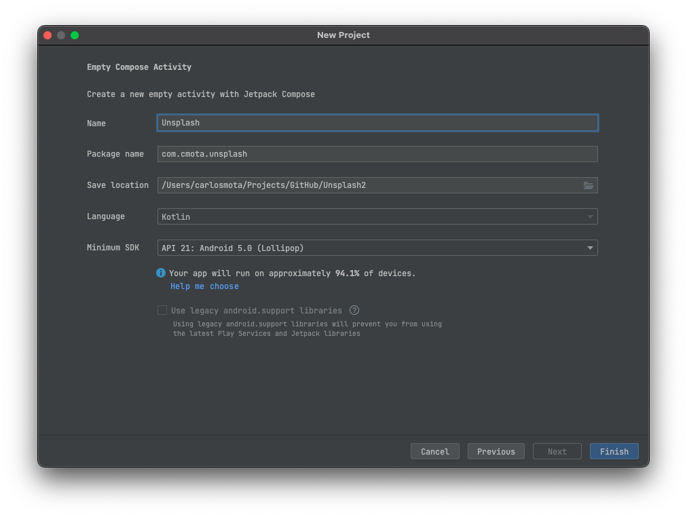
After filling all the fields, click on Finish and wait for the project to synchronize.
Once done, click on compile and run in a couple of seconds you'll see an app on your phone/emulator welcoming you to this Composable new world!
The images that you're going to see in the app comes from the Unsplash API. In order to use it, you'll need to request an API key. It's easy to use, and free for non-commercial projects.
Everything you need for this project is in this git repository. To get started, you'll need to
git clone https://github.com/cmota/a-composable-new-world.git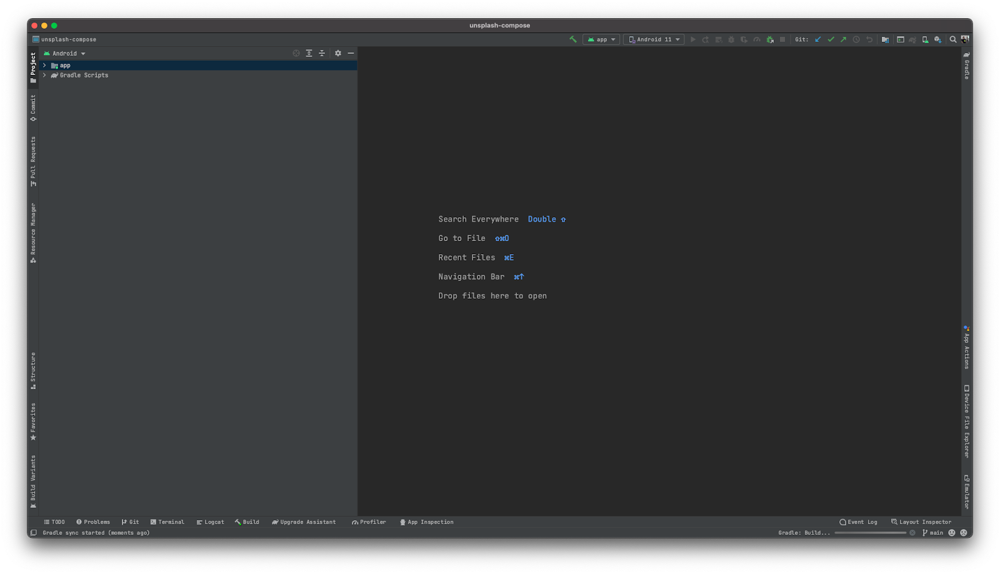
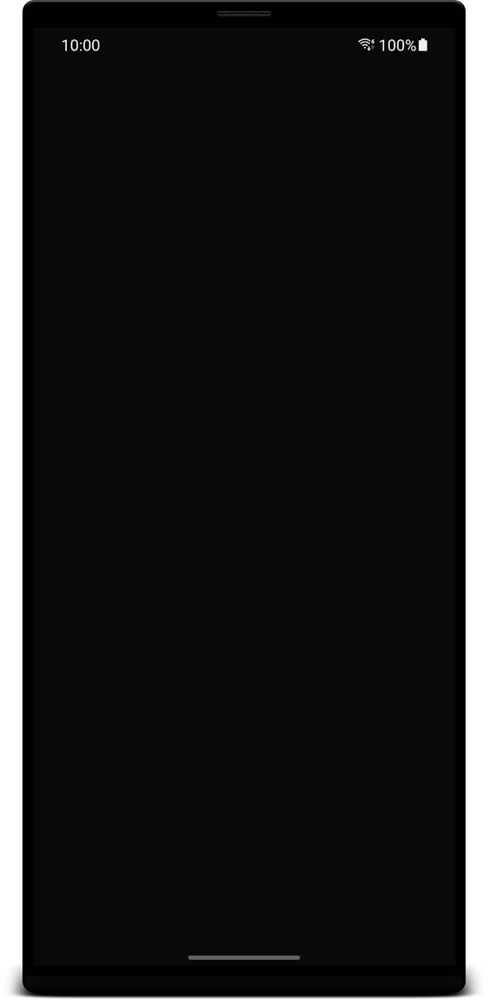
The source code of this codelab is available on GitHub. It follows the same structure of this Codelab.
Let's start! Open the content of Starter Project on Android Studio.
When you open 00.Starter Project and start to navigate throughout the source code you'll see two separated folders:
This one contains all of the business logic for the Unsplash app
With all the code required to design the UI
For the initial sections of this codelab you'll only need to work with the ui folder. shared is left for the last - But wait! There's more: Alicerce, and as you'll see it was built to help you move your existing code to multiplatform. But that's a secret for now! 🤐
After synchronizing and running the project you look at your device/emulator and see... a black screen. Don't worry, everything is working as expected!
It's now time to start adding content to it.
If you open the AndroidManifest.xml you'll see that MainActivity.kt is the activity that's going to be launched when the app starts (it's also the only activity of the project).
You can already spot a couple of differences between Compose and XML. The one that immediately jumps out is when you look at the setContent function and see that it no longer receives a layout resource. Instead a Composable function is required in order to design your screen.
Having readability in mind, the project is organized into subfolders where each one of them correspond to a specific screen or feature:
Defines the Composable functions for the about screen code
Contains a set of classes that together define the theme and styles for the application
As you're moving through the sections you'll see new folders being added.
Ready to dive into Compose? Let's start!
For now you're seeing a black screen, so let's start by adding some text! To do this, there is a function called Text. It receives a couple of parameters, for now let's focus on defining a specific string.
Inside the Composable of the AboutContent.kt file add:
@Composable
fun AboutContent() {
Text(
text = stringResource(id = R.string.about_text)
)
}Don't forget that you'll also need to import the correspondent classes:
Textimport androidx.compose.material.Text
stringResourceimport androidx.compose.ui.res.stringResource
import com.cmota.unsplash.R
stringResource can be seen as the equivalent function of getString but for Composables. Typically to access a string resource you would either use the activity or application context to call getString. With stringResource this is easier and the only condition to call it is that the code is inside a Composable function.
Now compile and run the project. What did you see differently?
Nothing right? That's because the default color for the Text is black - the same one that's being used on the surface. Let's change that!
Once the default color of the text is the same as the background it's time to change one of them, otherwise it won't be possible to read anything.
In the same file, set the following parameter in the Text function.
@Composable
fun AboutContent() {
Text(
text = stringResource(id = R.string.about_text),
color = Color.White
)
}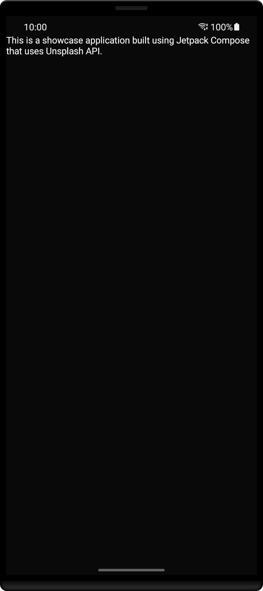
Better, right?
Text supports all of these parameters to be defined:
@Composable
fun Text(
text: String,
modifier: Modifier = Modifier,
color: Color = Color.Unspecified,
fontSize: TextUnit = TextUnit.Unspecified,
fontStyle: FontStyle? = null,
fontWeight: FontWeight? = null,
fontFamily: FontFamily? = null,
letterSpacing: TextUnit = TextUnit.Unspecified,
textDecoration: TextDecoration? = null,
textAlign: TextAlign? = null,
lineHeight: TextUnit = TextUnit.Unspecified,
overflow: TextOverflow = TextOverflow.Clip,
softWrap: Boolean = true,
maxLines: Int = Int.MAX_VALUE,
onTextLayout: (TextLayoutResult) -> Unit = {},
style: TextStyle = LocalTextStyle.current
)
For now, define the text to be bigger and so easier to read and align it to center instead of left.
@Composable
fun AboutContent() {
Text(
text = stringResource(id = R.string.about_text),
color = Color.White,
fontSize = 21.sp,
textAlign = TextAlign.Center
)
}You'll see a similar screen to this one:
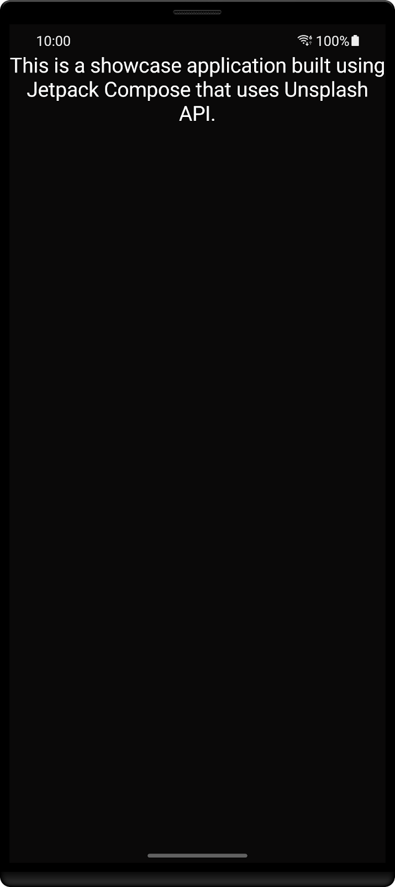
Feel free to play with the rest of these parameters and see how they affect your text.
You've already customized your text, but it still feels that this screen has everything too close, there's almost no space between the status bar and the app. Let's update this!
First, you'll need to use a new function called Column. Before continuing, the following image from the Android documentation is important to better understand this Composable.
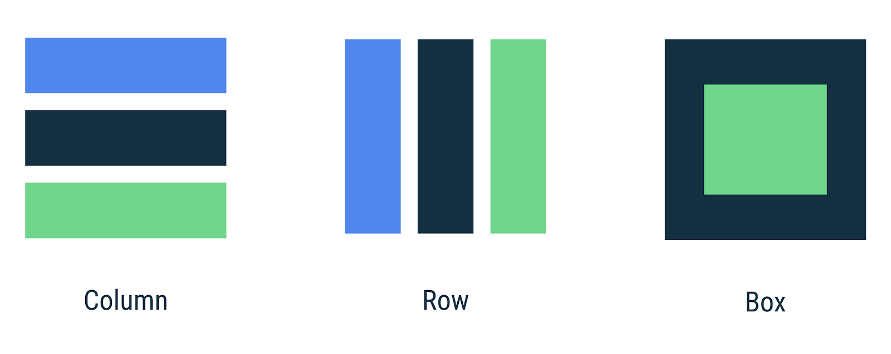
A good example on why we need to use these functions is to add another Text and see what happens:
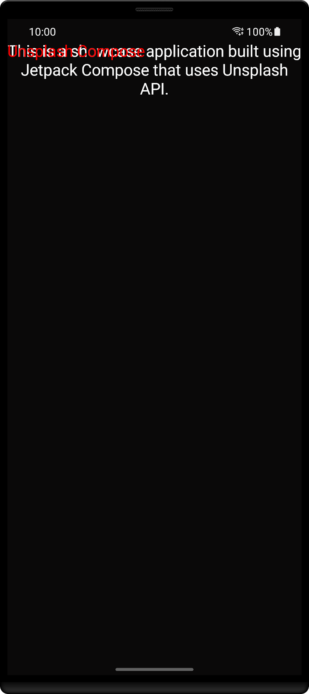
The screen will render both texts one on top of the other. Now, to overcome this you can either add Column if you want them to be one below the other or Row if instead you want them aligned side by side.
Using Column:
@Composable
fun AboutContent() {
Column {
Text(
text = stringResource(id = R.string.app_name),
color = Color.Red,
fontSize = 21.sp,
textAlign = TextAlign.Center
)
Text(
text = stringResource(id = R.string.about_text),
color = Color.White,
fontSize = 21.sp,
textAlign = TextAlign.Center
)
}
}
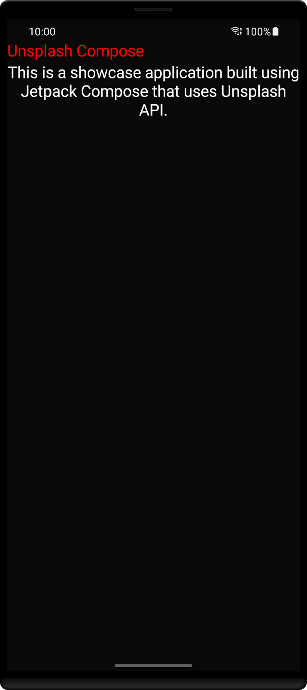
Now imagine that you want to center your text on the screen. There are different possibilities to achieve this, but since you've just seen how to use Column you're going to follow this approach.
In the section above you've seen that Column allows you to stack components. This function has a lot more functionalities that you can use to build your UI's.
@Composable inline fun Column( modifier: Modifier = Modifier, verticalArrangement: Arrangement.Vertical = Arrangement.Top, horizontalAlignment: Alignment.Horizontal = Alignment.Start, content: @Composable ColumnScope.() -> Unit )
One of these features is the use of Modifier. Here you can define a never ending set of attributes: width, height, background, click event, padding, etc. And of course, you can always create extensions with new behaviors 🙂.
Along with it, you also have the verticalArrangment and horizontalAlignment that allow you to define how content should be displayed in the screen: align to the start, end, top, bottom, etc.
You'll use these four parameters to center your text.
@Composable
fun AboutContent() {
Column(
modifier = Modifier
.fillMaxSize()
.padding(16.dp),
horizontalAlignment = Alignment.CenterHorizontally,
verticalArrangement = Arrangement.Center
) {
Text(
text = stringResource(id = R.string.about_text),
color = Color.White,
fontSize = 21.sp,
textAlign = TextAlign.Center
)
}
}
You should see a similar screen to this one:
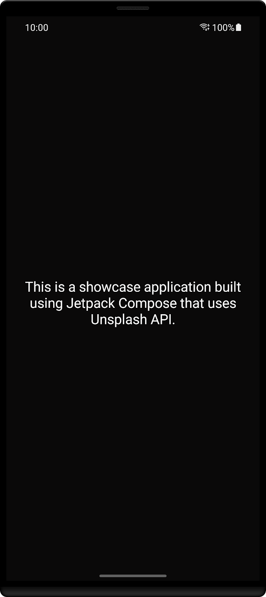
In the previous screen you've added and customized text on an empty screen. It's time to dive in and build our app.
Start by creating a new package called home inside ui. The correct path should be:
Here is where you're going to create the second screen for your app. After creating the folder add a new Kotlin file inside and call it HomeContent.kt.
Update it's content to be a Composable function called HomeContent.
@Composable
fun HomeContent() {
// Your code will be here
}
Don't forget to import androidx.compose.runtime.Composable in order to use @Composable.
This screen contains a list of images that are going to be fetched from Unsplash API. So the first step here is to define our image. Create a new function called AddUnsplashImage and add:
@Composable
fun AddUnsplashImage(image: Image) {
}
It's going to receive an Image object which is defined inside shared/data/model and it's used to serialize the response received from the API. Here, it's going to be used to populate this function.
You'll need to import Image from com.cmota.unsplash.shared.data.model.Image.
You're not going to load these images from the device local storage, Image contains a url from where the image needs to be downloaded so it can be displayed.
There are already a lot of libraries that do this for you: Glide, Picasso, Coil, etc. Here, you're going to use Coil. Why? Well, it was the first library that I've noticed that already supported Compose and it has been working perfectly since then.
Start by adding the library to the project. Open build.gradle.kts and in the dependencies section add:
implementation("io.coil-kt:coil-compose:1.3.2")
Now click on synchronize and wait a bit for the system to fetch Coil.
Once done, create a new package called components. It should be inside com.cmota.unsplash. Here create a new class and call it ImagePreview.kt. This is a component that you can reuse throughout your app screens, so instead of adding it to HomeContent.kt increasing the number of lines of that file and reducing readability I've decided to add it inside components.
Now, if you want to add images on another screen instead of looking for the correct function inside HomeContent.kt you just need to browse your components folder.
It's now time to define the image integration with Coil.
@Composable
//1
fun AddImagePreview(
url: String,
modifier: Modifier
) {
//2
val request = ImageRequest.Builder(LocalContext.current)
.data(url)
.crossfade(true)
.build()
//3
val painter = rememberAsyncImagePainter(
model = request
)
Box {
//4
Image(
painter = painter,
contentScale = ContentScale.Crop,
contentDescription = stringResource(id = R.string.description_preview),
modifier = modifier
)
//5
when (painter.state) {
is AsyncImagePainter.State.Loading -> {
AddImagePreviewEmpty(modifier)
}
is AsyncImagePainter.State.Error -> {
AddImagePreviewEmpty(modifier)
}
else -> {
// Do nothing
}
}
}
}
A lot is being done here, so let's go step by step:
url and a modifier. The first one is used to define where the image should be fetched and the second one to define the attributes for the image component.crossfade parameter enabled. This is set just to create a smooth animation for when the image is fetched.rememberImagePainter, so recomposition can take place when the image is downloaded. Otherwise, the screen will show AddImagePreviewEmpty from Loading state.Image Composable, responsible to draw the image on the screen. It's worth mentioning that you should always set contentDescription for accessibility purposes.AddImagePreviewEmptyAdd the AddImagePreviewEmpty function:
@Composable
fun AddImagePreviewEmpty(modifier: Modifier) {
Image(
painter = painterResource(id = R.drawable.ic_launcher),
contentDescription = stringResource(id = R.string.description_preview_error),
modifier = modifier
)
}
Now that you've created the application image components and logic. It's time to navigate to HomeContent.kt and add some images!
First, update the HomeContent to receive a list of images:
@Composable
fun HomeContent(
images: List<Image>
) {
// Your code will be here
}
Now that this is done and since it's receiving a list, this means that you'll need to implement a list in Compose. Doing this in XML would mean that you're going to use RecyclerView so you needed to create it along with an Adapter and the XML files for the entries.
In Compose this is really simple, to create a list you just need to use:
LazyColumnFor vertical lists
LazyRowFor horizontal lists
With this in mind add:
@Composable
fun HomeContent(
images: List<Image>
) {
LazyColumn(
modifier = Modifier.fillMaxWidth(),
content = {
items(images) {
AddUnsplashImage(image = it)
}
}
)
}
Now that the list is already added and is calling the AddUnsplashImage function that was created before, it's time to call the Composables from ImagePreview.
@Composable
fun AddUnsplashImage(image: Image) {
AddImagePreview(
url = image.urls.regular ?: "",
modifier = Modifier
.fillMaxWidth()
.height(200.dp)
.clip(RoundedCornerShape(8.dp))
.background(color = colorContentSecondary)
)
}
In this Modifier, you're setting the clip function with a shape - RoundedCornerShape. This is going to transform the image and apply round corners to it.
Now that the UI is ready, it's only missing connecting to the existing view model - UnsplashViewModel - so the data can be retrieved.
Open MainActivity.kt and declare a property with the UnsplashViewModel type after the class declaration.
private val unsplashViewModel: UnsplashViewModel by viewModels()
Once done, it's time to call fetchImages and send the result to HomeContent.
class MainActivity : AppCompatActivity() {
//1
private val unsplashViewModel: UnsplashViewModel by viewModels()
override fun onCreate(savedInstanceState: Bundle?) {
super.onCreate(savedInstanceState)
//2
unsplashViewModel.fetchImages()
setContent {
//3
val images = unsplashViewModel.images.observeAsState()
//4
HomeContent(
images = images.value ?: emptyList()
)
}
}
}
Going through this newly updated code:
onCreate call fetchImages, so the Unsplash API is queried for the latest trending imagesimages field that will hold the imagesAboutContent call and change it instead to HomeScreen where you're going to send the newly retrieved imagesEvery time the images field is updated, MainScreen will recomposite and update the UI with the new content.
If you try to compile the project now, you'll see that observeAsState is missing. This is because it's part of the runtime-livedata library. So before you compile the project, go over to the build.gradle.kts file and under dependencies add:
implementation("androidx.compose.runtime:runtime-livedata:1.1.0-alpha05")
Compile and run the project and let's see which beautiful images the Unsplash API sends to you.
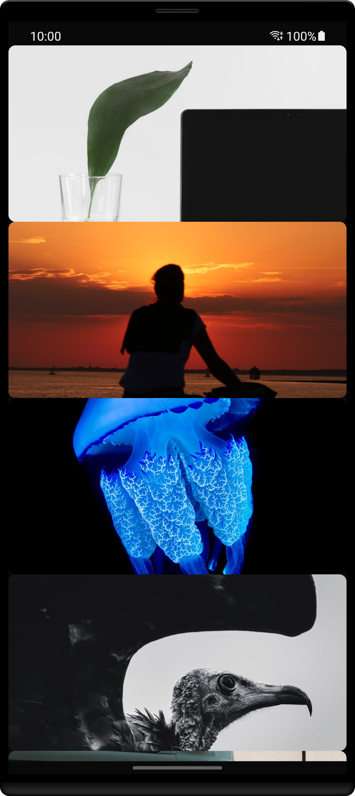
Now that you're seeing all the images, it's time to improve the layout. Every image is glued to the next one, there are no margins, and there's no information about the author and the name of the image. So let's improve this layout.
Open HomeContent.kt and scroll to the AddUnsplashImage function.
@Composable
fun AddUnsplashImage(image: Image) {
//1
Surface(
modifier = Modifier.padding(
start = 16.dp,
end = 16.dp,
top = 8.dp,
bottom = 8.dp
),
color = Color.Transparent
) {
//2
AddImagePreview(
url = image.urls.regular ?: "",
modifier = Modifier
.fillMaxWidth()
.height(200.dp)
.clip(RoundedCornerShape(8.dp))
.background(color = colorContentSecondary)
)
//3
val verticalGradientBrush = Brush.verticalGradient(
colors = listOf(
colorContent20Transparency,
colorContent85Transparency
)
)
//4
Column(
modifier = Modifier
.fillMaxWidth()
.height(200.dp)
.background(brush = verticalGradientBrush),
verticalArrangement = Arrangement.Bottom
) {
//5
Column(
modifier = Modifier.padding(16.dp)
) {
Text(
text = image.description ?: "",
fontSize = 17.sp,
color = colorAccent
)
Spacer(modifier = Modifier.height(4.dp))
//6
Text(
text = image.user.username,
fontSize = 15.sp,
color = colorAccent,
maxLines = 2,
overflow = TextOverflow.Ellipsis
)
}
}
}
}
Let's analyze this code step-by-step:
Surface here because there are three different layers of the app that need to be put on top of each other:AddImagePreview Composable that you'd already definedColumn. Also it's content is aligned to the bottom.Column is used here to hold the image description and the authors' name as well to define a padding on these components. If this was done on the previous Column, the background wouldn't fill the entire image.It's time to compile and run the app. Let's see how it looks after all of these changes 🎨.
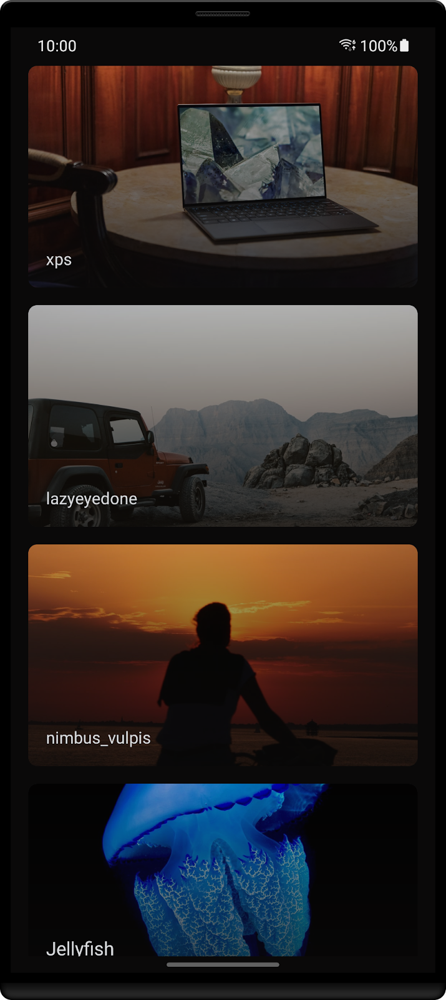
Themes and styles are great for two things. First, they allow us to keep our components consistent. If we need to increase the font size we can just update it's value on the style and all the text that makes use of it will be updated. As apps get with more and more screens this is great to avoid missing that one text that was left with the old font size. Secondly, it seems night mode was the greatest feature two years ago, since most of the platforms and apps mentioned it's support. Having the possibility to use themes makes this implementation simpler (and faster).
If you open the font folder inside the resource files you'll see that there's a big_noodle_titling.ttf file over there. In this section you're going to update the app to use this font as default.
Start by creating a new file called Type.kt inside the ui/theme folder.
Now, it's time to load this font and apply it to all the Text Composables in the app.
private val BigNoodleTitlingFontFamily = FontFamily(
Font(R.font.big_noodle_titling)
)
Define a set of font sizes to use afterward:
private val fontSizeLarge = 21.sp private val fontSizeMedium = 17.sp private val fontSizeSmall = 15.sp
Now that the attributes are defined it's time to set the typography:
val typography = Typography(
h1 = TextStyle(
color = colorAccent,
fontFamily = BigNoodleTitlingFontFamily,
fontWeight = FontWeight.Bold,
fontSize = fontSizeMedium
),
h2 = TextStyle(
color = colorAccent,
fontFamily = BigNoodleTitlingFontFamily,
fontWeight = FontWeight.Normal,
fontSize = fontSizeSmall
),
h3 = TextStyle(
color = colorAccent,
fontFamily = BigNoodleTitlingFontFamily,
fontSize = fontSizeLarge
)
)
With everything defined it is now time to open HomeScreen.kt file again and update the Text Composables to use this newly defined TextStyle.
The first Text that you're going to find is where the image description is used, replace the fontSize and color for the corresponding typography.h1 and then the next Text Composable for typography.h2.
Text( text = image.description ?: "", style = typography.h1 ) Spacer(modifier = Modifier.height(4.dp)) Text( text = image.user.username, style = typography.h2, maxLines = 2, overflow = TextOverflow.Ellipsis )
Finally, don't forget that there's still an AboutContent.kt file. Open it and update the same attributes to typography.h3.
Text( text = stringResource(id = R.string.about_text), style = typography.h3, textAlign = TextAlign.Center )
After defining a style, you can also define the theme that's going to be used in your app. This is particularly useful to avoid defining attributes like background, size, etc. for every component. It also makes it simple to define a light and a night theme.
Create a Theme.kt file in ui/theme. Here add the following code:
private val DarkColorPalette = darkColors(
background = colorContent,
onBackground = colorAccent
)
private val LightColorPalette = lightColors(
background = colorAccent,
onBackground = colorContent
)
@Composable
fun UnsplashTheme(
darkTheme: Boolean = isSystemInDarkTheme(),
content: @Composable () -> Unit
) {
val colors = if (darkTheme) {
DarkColorPalette
} else {
LightColorPalette
}
MaterialTheme(
colors = colors,
typography = typography,
shapes = Shapes,
content = content
)
}
First you've defined two different color palettes that can be used throughout the app. In this case they correspond to the dark and light palettes which should be used in case the device is in night mode or light, respectively.
In order to decide which one the system should use, you'll check the isSystemInDarkTheme function, that inside looks at the uiMode. Depending, on each one is selected one of those two palettes will be used to set the background color of a Composable.
Now open MainActivity.kt and add the HomeContent invocation to be inside the UnsplashTheme Composable:
UnsplashTheme {
HomeContent(
images = images.value ?: emptyList()
)
}
Finally, to see how you could apply this functionality, open HomeContent.kt and look for the LazyColumn call. Here, for now you were just defining it to fill the entire width of the screen. Add a background to it that will use the MaterialTheme.
LazyColumn(
modifier = Modifier
.fillMaxWidth()
.background(color = MaterialTheme.colors.background),
content = {
items(images) {
AddUnsplashImage(image = it)
}
}
)
Now compile and run the app. Switch between the light and night mode and see how your app adjusts 🌓.
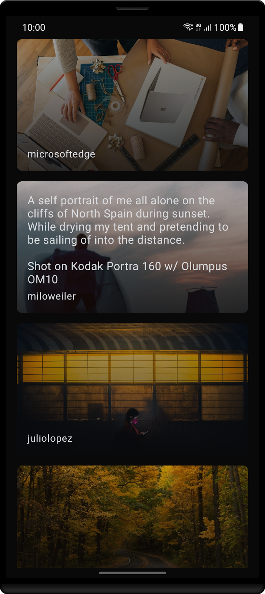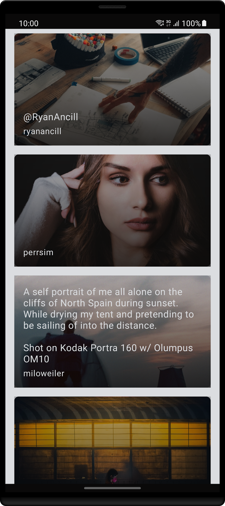
Let's keep adding new features in the app, this time a top bar.
To do this, you're going to use a function called Scaffold that already creates the layout structure for the app. If you look at the parameters it receives:
@Composable
fun Scaffold(
modifier: Modifier = Modifier,
scaffoldState: ScaffoldState = rememberScaffoldState(),
topBar: @Composable () -> Unit = {},
bottomBar: @Composable () -> Unit = {},
snackbarHost: @Composable (SnackbarHostState) -> Unit = { SnackbarHost(it) },
floatingActionButton: @Composable () -> Unit = {},
floatingActionButtonPosition: FabPosition = FabPosition.End,
isFloatingActionButtonDocked: Boolean = false,
drawerContent: @Composable (ColumnScope.() -> Unit)? = null,
drawerGesturesEnabled: Boolean = true,
drawerShape: Shape = MaterialTheme.shapes.large,
drawerElevation: Dp = DrawerDefaults.Elevation,
drawerBackgroundColor: Color = MaterialTheme.colors.surface,
drawerContentColor: Color = contentColorFor(drawerBackgroundColor),
drawerScrimColor: Color = DrawerDefaults.scrimColor,
backgroundColor: Color = MaterialTheme.colors.background,
contentColor: Color = contentColorFor(backgroundColor),
content: @Composable (PaddingValues) -> Unit
)
You can find the topBar that you're going to use, as well as other components that you typically can find on an Android app, for instance, the floatingActionButton.
Start by creating a new package called main that should be inside the ui folder. Followed by a new file called MainScreen.kt.
Once again, depending on, how you created the file remove the class declaration if it exists and add:
@Composable
//1
fun MainScreen(
images: List<Image>
) {
//2
Scaffold(
//3
topBar = {
TopAppBar(
title = {
Text(
text = stringResource(id = R.string.app_name),
style = typography.h3,
//4
color = MaterialTheme.colors.onBackground
)
},
modifier = Modifier.fillMaxWidth(),
backgroundColor = MaterialTheme.colors.background,
elevation = 0.dp
)
},
//5
content = {
HomeContent(
images = images
)
}
)
}
Let's dive in into this new function:
Scaffold that already defines how an application should look, you're going to use it.topBar and content. Starting with the first one, as you saw before, this argument receives a Composable function, so you'll need to create it. Fortunately, there's already a TopAppBar that you can use to implement this feature. You just need to define the Text.onBackground color, because it's the exact opposite of the color used to set a background. If you were going to use the same, well... you wouldn't be able to read the text.Scaffold.I've mentioned earlier that this new function is going to be the app starting point, so head over MainActivity.kt and change the HomeScreen call to MainScreen.
UnsplashTheme {
MainScreen(
images = images.value ?: emptyList()
)
}
Time to compile the app and see how it looks now!
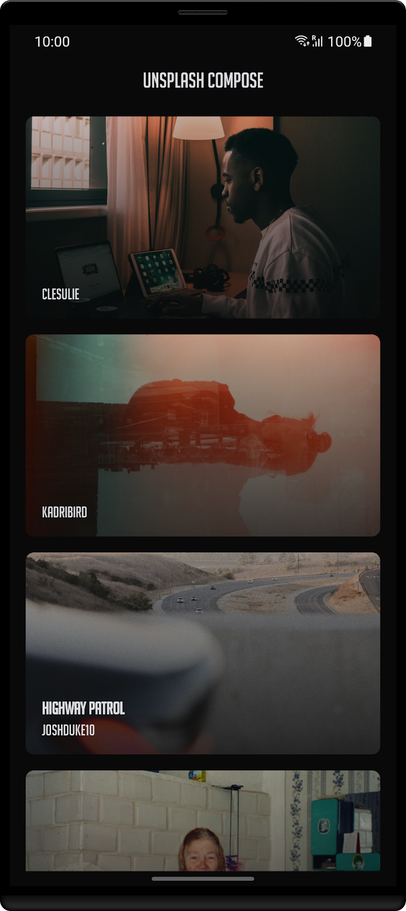
Now that you've added the top bar, it's time to add the navigation bar. And yes, you're also going to use the Scaffold introduced before for that 🙌.
Start by creating a BottomNavigationScreen.kt file inside the main folder.
Here you're going to create a class that's going to be used to define each tab - a tag, it's the label text and the icon that should be displayed. In this newly created file add:
sealed class BottomNavigationScreens(
val route: String,
@StringRes val stringResId: Int,
@DrawableRes val drawResId: Int
) {
object Home : BottomNavigationScreens("Home", R.string.navigation_home, R.drawable.ic_home)
object About : BottomNavigationScreens("About", R.string.navigation_about, R.drawable.ic_about)
}
Finally go back to the MainContent.kt file and update the Composable function to use the NavHost.
This component is part of the androidx.navigation library, so you need to add it to the build.gradle.kts inside the dependencies section.
implementation("androidx.navigation:navigation-compose:2.4.0-alpha10")
Wait for the project to synchronize. Once done, before the function declaration add:
private val DEFAULT_SCREEN = BottomNavigationScreens.Home
This field corresponds to the first tab that should be visible, in other words, selected.
Now you need to define a navigation controller. Since the app needs to keep track of the tab that's currently selected, you're going to use rememberNavController. After the function declaration add:
val navController = rememberNavController()
In the previous section when looking at the Scaffold function (you can scroll up, I'll wait 👀) you saw that there's a bottomBar parameter. Let's define it here.
Scaffold(
...
bottomBar = {
val bottomNavigationItems = listOf(
BottomNavigationScreens.Home,
BottomNavigationScreens.About
)
MainBottomBar(
navController = navController,
items = bottomNavigationItems
)
},
...
)
Here you're defining which tabs need to be added.
MainBottomBar is not yet defined, it's a custom Composable created to define a tab, so let's create it! Inside the main folder add a new file - MainBottomBar.kt.
Now create the Composable function - MainBottomBar:
private lateinit var selectedIndex: MutableState<Int>
@Composable
fun MainBottomBar(
navController: NavHostController,
items: List<BottomNavigationScreens>
) {
BottomNavigation(
backgroundColor = colorPrimary
) {
//1
selectedIndex = remember { mutableStateOf(0) }
//2
items.forEachIndexed { index, screen ->
val isSelected = selectedIndex.value == index
//3
BottomNavigationItem(
modifier = Modifier.background(MaterialTheme.colors.background),
icon = {
Icon(
painter = painterResource(id = screen.drawResId),
contentDescription = stringResource(id = screen.stringResId)
)
},
label = {
Text(
stringResource(id = screen.stringResId),
style = typography.subtitle1
)
},
selected = isSelected,
//4
selectedContentColor = colorPrimary,
unselectedContentColor = colorAccent,
alwaysShowLabel = true,
//5
onClick = {
if (!isSelected) {
selectedIndex.value = index
navController.navigate(screen.route)
}
}
)
}
}
}
Going through the code:
remember selectedIndex so recomposition can occur and the color of the icon and text changes depending if it's selected or not.BottomNavigationItem is created with the corresponding icon and label.BottomNavigationItem can handle the selected and unselected states and apply the corresponding defined color.Since we're using styles and themes don't forget to add at Type.kt the subtitle1 definition.
subtitle1 = TextStyle( fontFamily = BigNoodleTitlingFontFamily, fontWeight = FontWeight.Normal, fontSize = fontSizeSmall )
Finally, get back to MainScreen.kt it's time to make the final adjustment. For that you need to update the content block of the Scaffold with:
NavHost(navController, startDestination = DEFAULT_SCREEN.route) {
composable(BottomNavigationScreens.Home.route) {
HomeContent(
images = images
)
}
composable(BottomNavigationScreens.About.route) {
AboutContent()
}
}
This way when the user presses a different tab then the one that's selected, it will automatically recreate this part of the screen.
Compile and run the app to see how it looks!
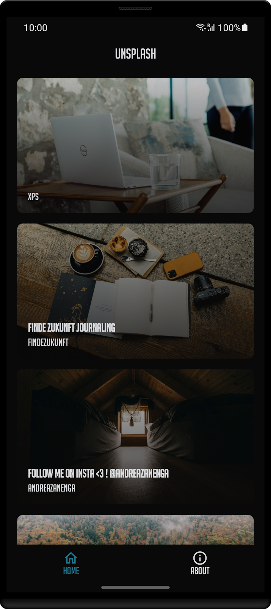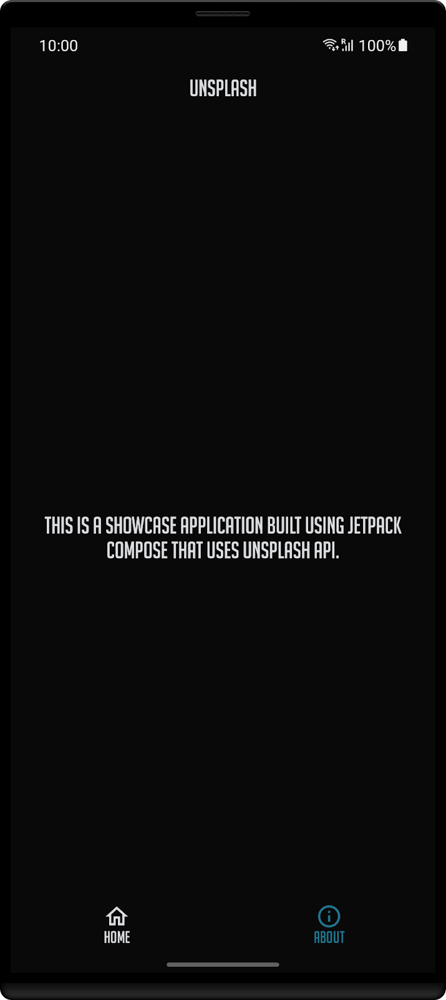
Your app is coming along quite nicely! Well done 🙌!
In this chapter you're going to see how you can interact with it. The goal is for the user to enter some text and the app should search photos related to that word in the Unsplash repository.
Start by opening the MainContent.kt file and lets add a new item to the list:
content = {
item {
AddSearchField(onSearchAction)
}
...
}
So you now need to define the AddSearchField function and onSearchAction action.
Let's start by adding the search field:
@Composable
fun AddSearchField(onSearchAction: (String) -> Unit) {
//1
val search = remember { mutableStateOf("") }
//2
val focused = remember { mutableStateOf(false) }
//3
OutlinedTextField(
//4
value = search.value,
//5
onValueChange = { value ->
search.value = value
},
modifier = Modifier
.fillMaxWidth()
.padding(16.dp)
.onFocusChanged {
focused.value = it.isFocused
},
//6
placeholder = {
Text(
text = stringResource(id = R.string.search_hint),
style = typography.h3,
color = MaterialTheme.colors.onBackground
)
},
//7
leadingIcon = {
val icon = painterResource(id = R.drawable.ic_search)
val description =
stringResource(R.string.description_search)
Icon(
painter = icon,
contentDescription = description
)
},
//8
colors = TextFieldDefaults.outlinedTextFieldColors(
focusedBorderColor = colorPrimary,
unfocusedBorderColor = colorAccent,
leadingIconColor = colorAccent,
cursorColor = colorAccent,
textColor = colorAccent
),
//9
keyboardOptions = KeyboardOptions.Default.copy(
imeAction = ImeAction.Done
),
//10
keyboardActions = KeyboardActions {
onSearchAction(search.value)
}
)
}
I know that is a bit of code, so let's go step-by-step:
OutlinedTextField to recompose.OutlinedTextField is focused, it should show a different color. Similar to property defined on 1, focused is used to recomposite this field when the user interacts with it.Composable function to be used. There's also TextField, being the difference between both - that this one creates an outline around the field.search with this new value so the field can be recomposed.EditText. Tells the user what action is expected, in this case it will search for an image that corresponds to that topic.TextField.KeyboardOptions with the ImeAction Done will change the keyboard layout to show the bottom right key as a tick.KeyboardActions defines what should happen when the user clicks on the key mentioned in 9. In this scenario it will look for images that belong to the text that was just entered.Now that the function is done, you'll need to update the HomeContent declaration, so it receives the onSearchAction:
fun HomeContent( images: List<Image>, onSearchAction: (String) -> Unit )
All the calls before, so in MainScreen.kt:
fun MainScreen( images: List<Image>, onSearchAction: (String) -> Unit )
and in the content parameter:
HomeContent(
images = images,
onSearchAction = onSearchAction
)
And in MainActivity.kt:
MainScreen(
images = images.value ?: emptyList(),
onSearchAction = { topic -> unsplashViewModel.searchForATopic(topic) }
)
Now that everything is done, compile and run the project and let's see how it looks!
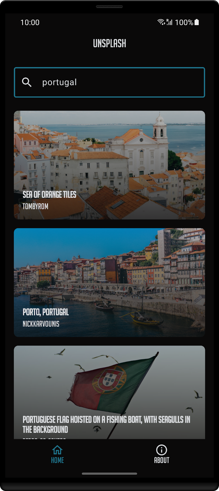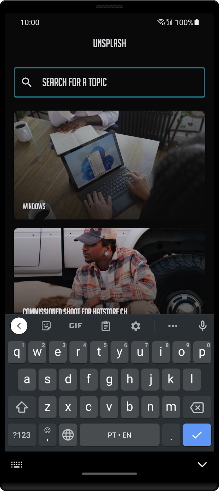
As you've reached the last chapter of this codelab, I wanted to share something that I believe that's going to help you develop your next apps - alicerce.
Alicerce is a template that I've created that automatically setups an android and a desktop application that shares most of its code via:
Give it a go! You can find the repository here.
There's also a full version of Unsplash using this template in this repository.
If you have any questions just reach me at twitter. All the feedback is more than welcome.
See you in the next event! 🖖